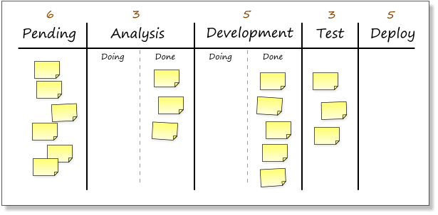

agile development practices
for sustainable software development
by Ibrahim El-Etr & Mohamed Ragab
Orange Labs Cairo
Speakers
- Ibrahim El-Etr
Head of Program Management in Orange Labs CairoMBA student in the German University in Cairo
- Mohamed Ragab
Head of Technology, and an Agile Development Coach in Orange Labs Cairo
Agenda
- State of affairs
- Be agile adopting agile
- Agile development methodologies
- Challenges
- Wrapping up
- Discussion
Show of hands
- How do you relate yourself to software development?
TestingDevelopmentManagementMarketingCustomer
Show of hands
- Where are you from Agile software development?
ExploringPlanningStarted adoptionIteratingTried it, and it didn't work
Show of hands
- What is your current role in Agile software development?
Product OwnerScrum MasterTesterDeveloperCustomerNot remotely related!
State of affairs
in the young industry of software
The Standish Group Report
"chaos report"
- The scope of software project failures.
- The major factors that cause software projects to fail.
- The key ingredients that can reduce project failures.
Report: shows (1995)
- 31.1% of projects will be cancelled before they ever get completed
- 52.7% of projects will cost 189% of their original estimates
- The lost opportunity costs are not measurable, but could easily be in the trillions of dollars
- The failure to produce reliable software to handle baggage at the new Denver airport is costing the city $1.1 million per day.
report: projects' resolutions (2013)
| 2004 | 2006 | 2008 | 2010 | 2012 | |
| Successful | 29% | 35% | 32% | 37% | 39% |
| Failed | 18% | 19% | 24% | 21% | 18% |
| Challenged | 53% | 46% | 44% | 42% | 43% |
Report: Factors of Success
- (20) Executive management support
- (15) User involvement
- (15) Optimization
- (13) Skilled resources
- (12) Project management expertise
- (10) Agile process
- (6) Clear business objectives
- (5) Emotional maturity
- (3) Execution
- (1) Tools and infrastructure
Report: features usage
- 20% of features are used often and
- 30% of features and functions get used sometimes or infrequently
- 50% of features are hardly ever or never used.
the Bottleneck in software development
“Walking on water and developing software from a specification are easy if both are frozen”by: Edward V. Berard
Learning is the Bottleneck
What is the goal?
“Build the right thing, right”
- How do we know what "the right thing" is?
- Build it twice? ... too expensive
- Build one small piece at a time, and learn
- Iterate, and get feedback
Software is like ...
a manufacturing process
building construction
no it's not
Software is like ...
product design process
gardening!
that's more like it
late project ..
What to do?
“adding manpower to a late software project makes it later”
Fred Brooks in his book The Mythical Man-Month 1975
Agile development methodologies
Lean software development (LSD)
- A translation of lean manufacturing and lean IT principles and practices
- Adapted from the Toyota Production System
- Lean Software Development: An Agile Toolkit, by Mary Poppendieck and Tom Poppendieck, 2003
Lean software development
Lean principles
- Eliminate waste
- Amplify learning
- Decide as late as possible
- Deliver as fast as possible
- Empower the team
- Build integrity in
- See the whole
Extreme Programming (xp)
A software-development discipline that organizes people to produce higher-quality software more productively
Extreme Programming Explained, by Kent Beck, 1999
XP Practices ..
- Pair programming
- Planning game
- Test-driven development
- Continuous integration
- Refactoring
- Small releases
- Coding standard
- Collective code ownership
- Simple design
- Sustainable pace
XP Feedback Cycles ..
Agile Manifesto (2001)
Individuals and interactions over processes and tools
Working software over comprehensive documentation
Customer collaboration over contract negotiation
Responding to change over following a plan
Agile Manifesto Principles
- Early and continuous delivery of valuable software
- Welcome changing requirements
- Deliver working software frequently
- Business people and developers must work together
- Build projects around motivated individuals
- Face-to-face conversation
Agile Manifesto Principles
- Working software is the primary measure of progress
- Sustainable development, maintain a constant pace indefinitely
- Continuous attention to technical excellence and good design
- Simplicity, maximizing the amount of work not done
- The best architectures, requirements, and designs emerge from self-organizing teams
- At regular intervals: reflect, then tune and adjust accordingly
Scrum
In 1995, Jeff Sutherland and Ken Schwaber jointly presented a paper describing the Scrum methodology at OOPSLA '95
In 2001, Schwaber worked with Mike Beedle to describe the method in the book Agile Software Development with Scrum
Scrum
Scrum is an iterative and incremental agile software development framework for managing product development
Scrum adopts an empirical approach—accepting that the problem cannot be fully understood or defined, focusing instead on maximizing the team's ability to deliver quickly and respond to emerging requirements
Scrum
- Roles: Product Owner, Development Team, Scrum Master
- Events: Sprint, Sprint planning meeting, Daily scrum, Spring review & retrospective, Backlog refinement meeting
- Artifacts: Product backlog, Spring backlog, Product increment
- Progress: Burndown chart, Burnup chart
- Def. of Done: Backlog item, Sprint, Release
- Relative Sizing: Story points, using a rounded Fibonacci sequence
Kanban
Kanban is a method for managing knowledge work with an emphasis on just-in-time delivery while not overloading the team members
Kanban
- Map your current process
- Define the start and end points for the Kanban system
- Agree on initial work in progress (WIP) limits
- Agree on a process for prioritising and selecting items
- Agree on frequency of reviews
- Draw the board and start using
- Tune as you go
Kanban
Kanban

management and engineering
- todo
Test driven development
- todo
Refactoring
- todo
Behaviour driven development
- todo
Continuous integration
- todo
Challenges
from the trenches culture eats strategy for dinnerWrapping up
there is no silver bullet ..
- There will be failures, use them well
- Make things visible
- There will be successes, use them well
- Agile development exposes the issues that are already there
- Can you handle the feedback
there is no silver bullet ..
- We succeed together, or we fail together
- If you don't trust your team, Agile is not for you
- Unlearn, learn, practice, and evolve
- Be ware of: not enough training
- Be Agile adopting Agile
questions
thank you
Background Transition Override
You can override background transitions per slide by using
data-background-transition="slide".
Clever Quotes
These guys come in two forms, inline:
“The nice thing about standards is that there are so many to choose from”
and block:
“For years there has been a theory that millions of monkeys typing at random on millions of typewriters would reproduce the entire works of Shakespeare. The Internet has proven this theory to be untrue.”
Pretty Code
function linkify( selector ) {
if( supports3DTransforms ) {
var nodes = document.querySelectorAll( selector );
for( var i = 0, len = nodes.length; i < len; i++ ) {
var node = nodes[i];
if( !node.className ) {
node.className += ' roll';
}
}
}
}
Courtesy of highlight.js.